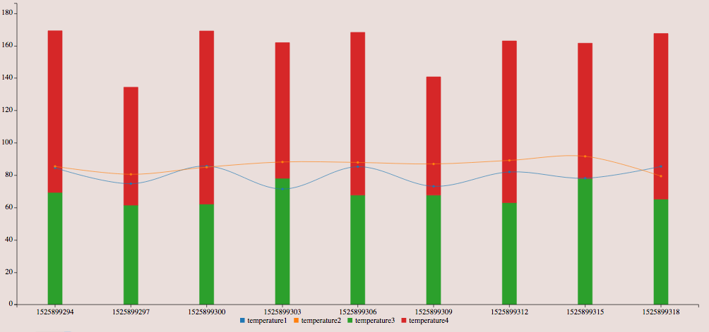
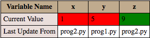
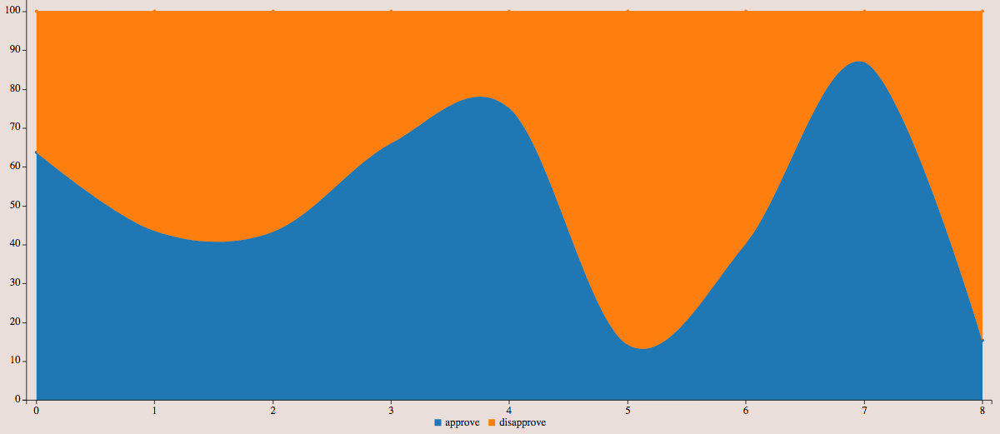

About
At the moment, developers face a fragmented reality when it comes to identifying a platform with an effective API for listening to streams of data and generating meaningful graphics on the basis of these data. What developers need is a consolidated solution; ideally, a powerful, versatile system that allows them to hook up a wide range of devices or data sources to stream data from and visualize these data in an effective manner instantaneously. We also wish for this system to be powerful, simple to use, and easily extendable so that users can expand it to fit a wide variety of usage scenarios.
With this in mind, we present Viztool, a flexible set of tools and demos that can be used, followed, and modified by a user in order to properly visualize their data in a way they deem most appropriate. By doing so, the user will have the ability to stream data in any way he/she seems fit, as well as visualize the data as graphs and charts on a web page.
Demos
Viztool is a customizable tool package that allows for users to visualize data in real time. A user has the option of changing existing demos or providing their own code to stream data. Viztool has several components:
- The Viztool Hub, which is the center of processing for our system
- The config file, which is used to subscribe devices and intialize graphs
- Devices to send data to the hub
- The extendable front end library which visualizes data in real time
Click Here to learn more in depth about Viztool and how it works!
The following are several examples of possible visualizations along with their live demos to showcase various use cases of our system
Temperature

In this demo a 'thermostat' sends ranodmized temperature data to be visualized as line and bar graphs. Link
Variable Scoreboard

This demo runs three programs, each with variables x, y, and z. There variables are periodically sent from each program to the hub, which visualizes them as a table to help with debugging. Link
Approval Rate

This demo randomly generates data to simulate an approval rating, which is then visualized as an area spline graph. Link
Download
Download
Installation Instructions
- Recommended: Pipenv setup
-
Install pipenv according to directions found here
-
Download and extract the contents of the Viztool zip folder
-
Navigate to folder with Viztool contents
-
Run “pipenv install --two” to set up a Python 2.7 environment
-
Pipenv will automatically install all requirements in the ‘requirements.txt’ file
-
Note: All python scripts run inside the pipenv should be run as ‘pipenv run python
filename.py’
-
Alternate setup
-
Download and extract the contents of the Viztool zip folder
-
Ensure Python version 2.7
-
Install dependencies with the command “pip install -r requirements.txt”
Team
This project was created as a part of CMSC435 at the University of Maryland, College Park
Team Members:
- Kurt Barsotti
- Anthony Breitzman
- Samirbhai Mistry
- Aditya Mithas
- Timothy Morrill
- Alex Panagopoulos
- Xun Wang
- Yimeng Wu